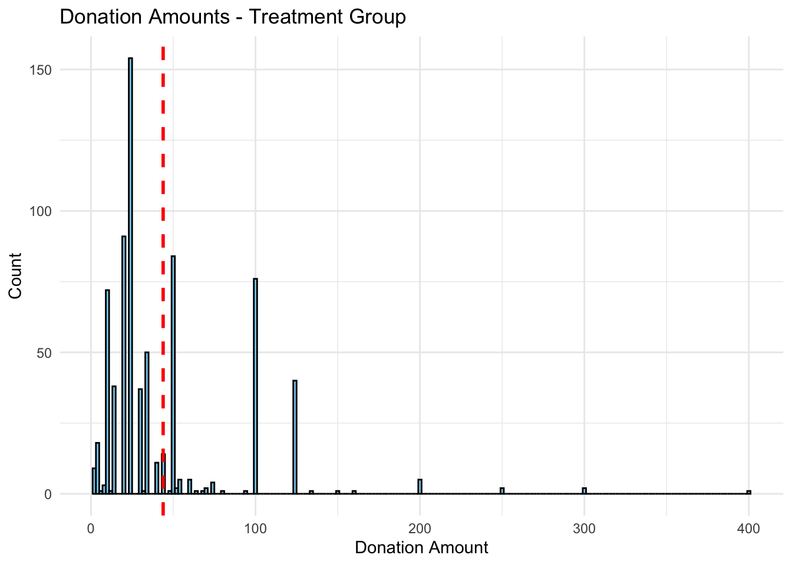

library(haven)
# Load the data from the current working directory
data <- read_dta("karlan_list_2007.dta")
list.files()[1] "index1_files" "index1.qmd" "index1.rmarkdown"
[4] "karlan_list_2007.dta"Dean Karlan at Yale and John List at the University of Chicago conducted a field experiment to test the effectiveness of different fundraising letters. They sent out 50,000 fundraising letters to potential donors, randomly assigning each letter to one of three treatments: a standard letter, a matching grant letter, or a challenge grant letter. They published the results of this experiment in the American Economic Review in 2007. The article and supporting data are available from the AEA website and from Innovations for Poverty Action as part of Harvard’s Dataverse.
to do: expand on the description of the experiment.
This project seeks to replicate their results.
todo: Read the data into R/Python and describe the data
library(haven)
# Load the data from the current working directory
data <- read_dta("karlan_list_2007.dta")
list.files()[1] "index1_files" "index1.qmd" "index1.rmarkdown"
[4] "karlan_list_2007.dta"#_todo: Read the data into R/Python and describe the data_
## Load libraries
library(haven)
library(dplyr)
Attaching package: 'dplyr'The following objects are masked from 'package:stats':
filter, lagThe following objects are masked from 'package:base':
intersect, setdiff, setequal, unionlibrary(ggplot2)
# Read the data
data <- read_dta("karlan_list_2007.dta")
# View structure of the dataset
str(data)tibble [50,083 × 51] (S3: tbl_df/tbl/data.frame)
$ treatment : num [1:50083] 0 0 1 1 1 0 1 1 1 1 ...
..- attr(*, "label")= chr "Treatment"
..- attr(*, "format.stata")= chr "%9.0g"
$ control : num [1:50083] 1 1 0 0 0 1 0 0 0 0 ...
..- attr(*, "label")= chr "Control"
..- attr(*, "format.stata")= chr "%9.0g"
$ ratio : dbl+lbl [1:50083] 0, 0, 1, 1, 1, 0, 1, 2, 2, 1, 1, 2, 0, 2, 0, 1, 3, 3...
..@ label : chr "Match ratio"
..@ format.stata: chr "%9.0g"
..@ labels : Named num 0
.. ..- attr(*, "names")= chr "Control"
$ ratio2 : num [1:50083] 0 0 0 0 0 0 0 1 1 0 ...
..- attr(*, "label")= chr "2:1 match ratio"
..- attr(*, "format.stata")= chr "%9.0g"
$ ratio3 : num [1:50083] 0 0 0 0 0 0 0 0 0 0 ...
..- attr(*, "label")= chr "3:1 match ratio"
..- attr(*, "format.stata")= chr "%9.0g"
$ size : dbl+lbl [1:50083] 0, 0, 3, 4, 2, 0, 1, 3, 4, 1, 4, 2, 0, 1, 0, 4, 1, 4...
..@ label : chr "Match threshold"
..@ format.stata: chr "%9.0g"
..@ labels : Named num [1:5] 0 1 2 3 4
.. ..- attr(*, "names")= chr [1:5] "Control" "$25,000" "$50,000" "$100,000" ...
$ size25 : num [1:50083] 0 0 0 0 0 0 1 0 0 1 ...
..- attr(*, "label")= chr "$25,000 match threshold"
..- attr(*, "format.stata")= chr "%9.0g"
$ size50 : num [1:50083] 0 0 0 0 1 0 0 0 0 0 ...
..- attr(*, "label")= chr "$50,000 match threshold"
..- attr(*, "format.stata")= chr "%9.0g"
$ size100 : num [1:50083] 0 0 1 0 0 0 0 1 0 0 ...
..- attr(*, "label")= chr "$100,000 match threshold"
..- attr(*, "format.stata")= chr "%9.0g"
$ sizeno : num [1:50083] 0 0 0 1 0 0 0 0 1 0 ...
..- attr(*, "label")= chr "Unstated match threshold"
..- attr(*, "format.stata")= chr "%9.0g"
$ ask : dbl+lbl [1:50083] 0, 0, 1, 1, 1, 0, 3, 3, 2, 2, 1, 3, 0, 2, 0, 1, 2, 3...
..@ label : chr "Suggested donation amount"
..@ format.stata: chr "%9.0g"
..@ labels : Named num [1:4] 0 1 2 3
.. ..- attr(*, "names")= chr [1:4] "Control" "1x" "1.25x" "1.50x"
$ askd1 : num [1:50083] 0 0 1 1 1 0 0 0 0 0 ...
..- attr(*, "label")= chr "Suggested donation was highest previous contribution"
..- attr(*, "format.stata")= chr "%9.0g"
$ askd2 : num [1:50083] 0 0 0 0 0 0 0 0 1 1 ...
..- attr(*, "label")= chr "Suggested donation was 1.25 x highest previous contribution"
..- attr(*, "format.stata")= chr "%9.0g"
$ askd3 : num [1:50083] 0 0 0 0 0 0 1 1 0 0 ...
..- attr(*, "label")= chr "Suggested donation was 1.50 x highest previous contribution"
..- attr(*, "format.stata")= chr "%9.0g"
$ ask1 : num [1:50083] 55 25 55 55 35 95 125 75 250 150 ...
..- attr(*, "label")= chr "Highest previous contribution (for suggestion)"
..- attr(*, "format.stata")= chr "%9.0gc"
$ ask2 : num [1:50083] 70 35 70 70 45 120 160 95 315 190 ...
..- attr(*, "label")= chr "1.25 x highest previous contribution (for suggestion)"
..- attr(*, "format.stata")= chr "%9.0gc"
$ ask3 : num [1:50083] 85 50 85 85 55 145 190 120 375 225 ...
..- attr(*, "label")= chr "1.50 x highest previous contribution (for suggestion)"
..- attr(*, "format.stata")= chr "%9.0gc"
$ amount : num [1:50083] 0 0 0 0 0 0 0 0 0 0 ...
..- attr(*, "label")= chr "Dollars given"
..- attr(*, "format.stata")= chr "%9.2f"
$ gave : num [1:50083] 0 0 0 0 0 0 0 0 0 0 ...
..- attr(*, "label")= chr "Gave anything"
..- attr(*, "format.stata")= chr "%9.0g"
$ amountchange : num [1:50083] -45 -25 -50 -25 -15 -45 -50 -65 -100 -125 ...
..- attr(*, "label")= chr "Change in amount given"
..- attr(*, "format.stata")= chr "%9.2fc"
$ hpa : num [1:50083] 45 25 50 50 25 90 100 65 200 125 ...
..- attr(*, "label")= chr "Highest previous contribution"
..- attr(*, "format.stata")= chr "%9.2fc"
$ ltmedmra : num [1:50083] 0 1 0 1 1 0 0 0 0 0 ...
..- attr(*, "label")= chr "Small prior donor: last gift was less than median $35"
..- attr(*, "format.stata")= chr "%9.0g"
$ freq : num [1:50083] 2 2 3 15 42 20 12 13 28 4 ...
..- attr(*, "label")= chr "Number of prior donations"
..- attr(*, "format.stata")= chr "%9.0g"
$ years : num [1:50083] 4 3 2 8 95 10 8 16 19 7 ...
..- attr(*, "label")= chr "Number of years since initial donation"
..- attr(*, "format.stata")= chr "%9.0g"
$ year5 : num [1:50083] 0 0 0 1 1 1 1 1 1 1 ...
..- attr(*, "label")= chr "At least 5 years since initial donation"
..- attr(*, "format.stata")= chr "%9.0g"
$ mrm2 : num [1:50083] 31 5 6 1 24 3 4 4 6 35 ...
..- attr(*, "label")= chr "Number of months since last donation"
..- attr(*, "format.stata")= chr "%9.0g"
$ dormant : num [1:50083] 1 0 0 0 1 0 0 0 0 1 ...
..- attr(*, "label")= chr "Already donated in 2005"
..- attr(*, "format.stata")= chr "%9.0g"
$ female : num [1:50083] 0 0 0 0 1 0 1 0 0 0 ...
..- attr(*, "label")= chr "Female"
..- attr(*, "format.stata")= chr "%9.0g"
$ couple : num [1:50083] 0 0 0 0 0 0 0 0 0 0 ...
..- attr(*, "label")= chr "Couple"
..- attr(*, "format.stata")= chr "%9.0g"
$ state50one : num [1:50083] 0 0 0 0 0 0 0 0 0 0 ...
..- attr(*, "label")= chr "State tag: 1 for one observation of each of 50 states; 0 otherwise"
..- attr(*, "format.stata")= chr "%9.0g"
$ nonlit : num [1:50083] 5 0 3 1 1 0 0 4 1 4 ...
..- attr(*, "label")= chr "Nonlitigation"
..- attr(*, "format.stata")= chr "%9.0g"
$ cases : num [1:50083] 4 2 1 2 1 0 1 3 1 3 ...
..- attr(*, "label")= chr "Court cases from state in 2004-5 in which organization was involved"
..- attr(*, "format.stata")= chr "%9.0g"
$ statecnt : num [1:50083] 4.5 2.98 9.61 3.28 2.3 ...
..- attr(*, "label")= chr "Percent of sample from state"
..- attr(*, "format.stata")= chr "%9.2f"
$ stateresponse : num [1:50083] 0.0199 0.0261 0.023 0.0207 0.0156 ...
..- attr(*, "label")= chr "Proportion of sample from the state who gave"
..- attr(*, "format.stata")= chr "%9.4f"
$ stateresponset : num [1:50083] 0.0195 0.0278 0.0222 0.0247 0.017 ...
..- attr(*, "label")= chr "Proportion of treated sample from the state who gave"
..- attr(*, "format.stata")= chr "%9.4f"
$ stateresponsec : num [1:50083] 0.0208 0.0225 0.0247 0.0127 0.0129 ...
..- attr(*, "label")= chr "Proportion of control sample from the state who gave"
..- attr(*, "format.stata")= chr "%9.4f"
$ stateresponsetminc: num [1:50083] -0.0013 0.00534 -0.00258 0.01202 0.00408 ...
..- attr(*, "label")= chr "stateresponset - stateresponsec"
..- attr(*, "format.stata")= chr "%9.4f"
$ perbush : num [1:50083] 0.49 0.465 0.408 0.465 0.525 ...
..- attr(*, "label")= chr "State vote share for Bush"
..- attr(*, "format.stata")= chr "%9.4f"
$ close25 : num [1:50083] 1 0 0 0 0 1 0 0 0 0 ...
..- attr(*, "label")= chr "State vote share for Bush between 47.5% and 52.5%"
..- attr(*, "format.stata")= chr "%9.0g"
$ red0 : num [1:50083] 0 0 0 0 1 1 1 0 1 0 ...
..- attr(*, "label")= chr "Red state"
..- attr(*, "format.stata")= chr "%9.0g"
$ blue0 : num [1:50083] 1 1 1 1 0 0 0 1 0 1 ...
..- attr(*, "label")= chr "Blue state"
..- attr(*, "format.stata")= chr "%9.0g"
$ redcty : num [1:50083] 0 1 0 1 0 1 1 0 1 0 ...
..- attr(*, "label")= chr "Red county"
..- attr(*, "format.stata")= chr "%9.0g"
$ bluecty : num [1:50083] 1 0 1 0 1 0 0 1 0 1 ...
..- attr(*, "label")= chr "Blue county"
..- attr(*, "format.stata")= chr "%9.0g"
$ pwhite : num [1:50083] 0.446 NA 0.936 0.888 0.759 ...
..- attr(*, "label")= chr "Proportion white within zip code"
..- attr(*, "format.stata")= chr "%9.4f"
$ pblack : num [1:50083] 0.5278 NA 0.0119 0.0108 0.1274 ...
..- attr(*, "label")= chr "Proportion black within zip code"
..- attr(*, "format.stata")= chr "%9.4f"
$ page18_39 : num [1:50083] 0.318 NA 0.276 0.279 0.442 ...
..- attr(*, "label")= chr "Proportion age 18-39 within zip code"
..- attr(*, "format.stata")= chr "%9.4f"
$ ave_hh_sz : num [1:50083] 2.1 NA 2.48 2.65 1.85 ...
..- attr(*, "label")= chr "Average household size within zip code"
..- attr(*, "format.stata")= chr "%9.2f"
$ median_hhincome : num [1:50083] 28517 NA 51175 79269 40908 ...
..- attr(*, "label")= chr "Median household income within zip code"
..- attr(*, "format.stata")= chr "%9.0gc"
$ powner : num [1:50083] 0.5 NA 0.722 0.92 0.416 ...
..- attr(*, "label")= chr "Proportion house owner within zip code"
..- attr(*, "format.stata")= chr "%9.4f"
$ psch_atlstba : num [1:50083] 0.325 NA 0.193 0.412 0.44 ...
..- attr(*, "label")= chr "Proportion who finished college within zip code"
..- attr(*, "format.stata")= chr "%9.4f"
$ pop_propurban : num [1:50083] 1 NA 1 1 1 ...
..- attr(*, "label")= chr "Proportion of population urban within zip code"
..- attr(*, "format.stata")= chr "%9.4f"data %>%
group_by(treatment) %>%
summarise(
response_rate = mean(gave),
avg_donation = mean(amount),
n = n()
)# A tibble: 2 × 4
treatment response_rate avg_donation n
<dbl> <dbl> <dbl> <int>
1 0 0.0179 0.813 16687
2 1 0.0220 0.967 33396As an ad hoc test of the randomization mechanism, I provide a series of tests that compare aspects of the treatment and control groups to assess whether they are statistically significantly different from one another.
todo: test a few variables other than the key outcome variables (for example, test months since last donation) to see if the treatment and control groups are statistically significantly different at the 95% confidence level. Do each as a t-test and separately as a linear regression, and confirm you get the exact same results from both methods. When doing a t-test, use the formula in the class slides. When doing the linear regression, regress for example mrm2 on treatment and look at the estimated coefficient on the treatment variable. It might be helpful to compare parts of your analysis to Table 1 in the paper. Be sure to comment on your results (hint: why is Table 1 included in the paper).
# Load required libraries
library(haven)
# Load the dataset
data <- read_dta("karlan_list_2007.dta")
# Variables to test
vars <- c("mrm2", "freq", "years")
# Loop through each variable and perform t-test and regression
for (var in vars) {
cat("\n==============================\n")
cat("Variable:", var, "\n")
# Remove missing values
df_clean <- na.omit(data[, c(var, "treatment")])
# T-test
t_test <- t.test(df_clean[[var]] ~ df_clean$treatment, var.equal = FALSE)
print(t_test)
# Linear regression
formula <- as.formula(paste(var, "~ treatment"))
lm_model <- lm(formula, data = df_clean)
print(summary(lm_model))
}
==============================
Variable: mrm2
Welch Two Sample t-test
data: df_clean[[var]] by df_clean$treatment
t = -0.11953, df = 33394, p-value = 0.9049
alternative hypothesis: true difference in means between group 0 and group 1 is not equal to 0
95 percent confidence interval:
-0.2381015 0.2107298
sample estimates:
mean in group 0 mean in group 1
12.99814 13.01183
Call:
lm(formula = formula, data = df_clean)
Residuals:
Min 1Q Median 3Q Max
-13.012 -9.012 -5.012 6.002 154.988
Coefficients:
Estimate Std. Error t value Pr(>|t|)
(Intercept) 12.99814 0.09353 138.979 <2e-16 ***
treatment 0.01369 0.11453 0.119 0.905
---
Signif. codes: 0 '***' 0.001 '**' 0.01 '*' 0.05 '.' 0.1 ' ' 1
Residual standard error: 12.08 on 50080 degrees of freedom
Multiple R-squared: 2.851e-07, Adjusted R-squared: -1.968e-05
F-statistic: 0.01428 on 1 and 50080 DF, p-value: 0.9049
==============================
Variable: freq
Welch Two Sample t-test
data: df_clean[[var]] by df_clean$treatment
t = 0.11085, df = 33326, p-value = 0.9117
alternative hypothesis: true difference in means between group 0 and group 1 is not equal to 0
95 percent confidence interval:
-0.1998370 0.2237945
sample estimates:
mean in group 0 mean in group 1
8.047342 8.035364
Call:
lm(formula = formula, data = df_clean)
Residuals:
Min 1Q Median 3Q Max
-8.035 -6.047 -4.035 1.953 209.965
Coefficients:
Estimate Std. Error t value Pr(>|t|)
(Intercept) 8.04734 0.08821 91.231 <2e-16 ***
treatment -0.01198 0.10802 -0.111 0.912
---
Signif. codes: 0 '***' 0.001 '**' 0.01 '*' 0.05 '.' 0.1 ' ' 1
Residual standard error: 11.39 on 50081 degrees of freedom
Multiple R-squared: 2.455e-07, Adjusted R-squared: -1.972e-05
F-statistic: 0.0123 on 1 and 50081 DF, p-value: 0.9117
==============================
Variable: years
Welch Two Sample t-test
data: df_clean[[var]] by df_clean$treatment
t = 1.0909, df = 32401, p-value = 0.2753
alternative hypothesis: true difference in means between group 0 and group 1 is not equal to 0
95 percent confidence interval:
-0.04584866 0.16094698
sample estimates:
mean in group 0 mean in group 1
6.135914 6.078365
Call:
lm(formula = formula, data = df_clean)
Residuals:
Min 1Q Median 3Q Max
-6.136 -4.136 -1.136 2.864 88.922
Coefficients:
Estimate Std. Error t value Pr(>|t|)
(Intercept) 6.13591 0.04260 144.023 <2e-16 ***
treatment -0.05755 0.05217 -1.103 0.27
---
Signif. codes: 0 '***' 0.001 '**' 0.01 '*' 0.05 '.' 0.1 ' ' 1
Residual standard error: 5.503 on 50080 degrees of freedom
Multiple R-squared: 2.429e-05, Adjusted R-squared: 4.327e-06
F-statistic: 1.217 on 1 and 50080 DF, p-value: 0.27Table 1 shows that the treatment and control groups were balanced on key baseline characteristics. That’s important because: 1. It confirms that random assignment worked. 2. It rules out the possibility that observed treatment effects are due to pre-existing differences.
First, I analyze whether matched donations lead to an increased response rate of making a donation.
todo: make a barplot with two bars. Each bar is the proportion of people who donated. One bar for treatment and one bar for control.
# Load necessary libraries
library(haven)
library(ggplot2)
library(dplyr)
# Read the data
data <- read_dta("karlan_list_2007.dta")
# Calculate donation proportions
donation_props <- data %>%
group_by(treatment) %>%
summarise(prop_donated = mean(gave, na.rm = TRUE)) %>%
mutate(group = ifelse(treatment == 1, "Treatment", "Control"))
# Plot
ggplot(donation_props, aes(x = group, y = prop_donated, fill = group)) +
geom_bar(stat = "identity", width = 0.6, show.legend = FALSE) +
geom_text(aes(label = scales::percent(prop_donated, accuracy = 0.1)),
vjust = -0.5, size = 5) +
scale_fill_manual(values = c("Control" = "#87CEEB", "Treatment" = "#1E90FF")) +
labs(
title = "Proportion of People Who Donated",
x = "Group",
y = "Proportion Donated"
) +
scale_y_continuous(labels = scales::percent, limits = c(0, 0.05)) + # Set limit if values are small
theme_minimal(base_size = 14) +
theme(
plot.title = element_text(hjust = 0.5, face = "bold"),
axis.text = element_text(size = 12),
axis.title = element_text(size = 14)
)todo: run a t-test between the treatment and control groups on the binary outcome of whether any charitable donation was made. Also run a bivariate linear regression that demonstrates the same finding. (It may help to confirm your calculations match Table 2a Panel A.) Report your statistical results and interpret them in the context of the experiment (e.g., if you found a difference with a small p-value or that was statistically significant at some threshold, what have you learned about human behavior? Use mostly English words, not numbers or stats, to explain your finding.)
# Load necessary libraries
library(haven)
# Load the data
data <- read_dta("karlan_list_2007.dta")
# Drop missing values
data_clean <- na.omit(data[, c("gave", "treatment")])
# T-test
t_test_result <- t.test(gave ~ treatment, data = data_clean, var.equal = FALSE)
print(t_test_result)
Welch Two Sample t-test
data: gave by treatment
t = -3.2095, df = 36577, p-value = 0.001331
alternative hypothesis: true difference in means between group 0 and group 1 is not equal to 0
95 percent confidence interval:
-0.006733310 -0.001627399
sample estimates:
mean in group 0 mean in group 1
0.01785821 0.02203857 # Bivariate linear regression
lm_result <- lm(gave ~ treatment, data = data_clean)
summary(lm_result)
Call:
lm(formula = gave ~ treatment, data = data_clean)
Residuals:
Min 1Q Median 3Q Max
-0.02204 -0.02204 -0.02204 -0.01786 0.98214
Coefficients:
Estimate Std. Error t value Pr(>|t|)
(Intercept) 0.017858 0.001101 16.225 < 2e-16 ***
treatment 0.004180 0.001348 3.101 0.00193 **
---
Signif. codes: 0 '***' 0.001 '**' 0.01 '*' 0.05 '.' 0.1 ' ' 1
Residual standard error: 0.1422 on 50081 degrees of freedom
Multiple R-squared: 0.000192, Adjusted R-squared: 0.0001721
F-statistic: 9.618 on 1 and 50081 DF, p-value: 0.001927todo: run a probit regression where the outcome variable is whether any charitable donation was made and the explanatory variable is assignment to treatment or control. Confirm that your results replicate Table 3 column 1 in the paper.
# Load necessary libraries
library(haven)
# Load the data
data <- read_dta("karlan_list_2007.dta")
# Drop missing values for the relevant variables
data_clean <- na.omit(data[, c("gave", "treatment")])
# Run the probit regression
probit_model <- glm(gave ~ treatment, family = binomial(link = "probit"), data = data_clean)
# View the summary
summary(probit_model)
Call:
glm(formula = gave ~ treatment, family = binomial(link = "probit"),
data = data_clean)
Coefficients:
Estimate Std. Error z value Pr(>|z|)
(Intercept) -2.10014 0.02332 -90.074 < 2e-16 ***
treatment 0.08678 0.02788 3.113 0.00185 **
---
Signif. codes: 0 '***' 0.001 '**' 0.01 '*' 0.05 '.' 0.1 ' ' 1
(Dispersion parameter for binomial family taken to be 1)
Null deviance: 10071 on 50082 degrees of freedom
Residual deviance: 10061 on 50081 degrees of freedom
AIC: 10065
Number of Fisher Scoring iterations: 6Next, I assess the effectiveness of different sizes of matched donations on the response rate.
todo: Use a series of t-tests to test whether the size of the match ratio has an effect on whether people donate or not. For example, does the 2:1 match rate lead increase the likelihood that someone donates as compared to the 1:1 match rate? Do your results support the “figures suggest” comment the authors make on page 8?
# Load necessary library
library(haven)
# Load the data
data <- read_dta("karlan_list_2007.dta")
# Filter to only treatment group and relevant variables
data_match <- subset(data, treatment == 1 & !is.na(ratio) & !is.na(gave))
# Create subsets by match ratio
gave_1to1 <- subset(data_match, ratio == 1)$gave
gave_2to1 <- subset(data_match, ratio == 2)$gave
gave_3to1 <- subset(data_match, ratio == 3)$gave
# T-tests
t_test_2vs1 <- t.test(gave_2to1, gave_1to1, var.equal = FALSE)
t_test_3vs1 <- t.test(gave_3to1, gave_1to1, var.equal = FALSE)
# Print results
t_test_2vs1
Welch Two Sample t-test
data: gave_2to1 and gave_1to1
t = 0.96505, df = 22225, p-value = 0.3345
alternative hypothesis: true difference in means is not equal to 0
95 percent confidence interval:
-0.001942773 0.005711275
sample estimates:
mean of x mean of y
0.02263338 0.02074912 t_test_3vs1
Welch Two Sample t-test
data: gave_3to1 and gave_1to1
t = 1.015, df = 22215, p-value = 0.3101
alternative hypothesis: true difference in means is not equal to 0
95 percent confidence interval:
-0.001847501 0.005816051
sample estimates:
mean of x mean of y
0.02273340 0.02074912 This supports the authors comment 1. The existence of a match offer boosts giving. 2. But increasing the generosity of the match (from 1:1 to 2:1 or 3:1) doesn’t significantly change donor behavior.
todo: Assess the same issue using a regression. Specifically, create the variable ratio1 then regress gave on ratio1, ratio2, and ratio3 (or alternatively, regress gave on the categorical variable ratio). Interpret the coefficients and their statistical precision.
# Load required library
library(haven)
# Load the dataset
data <- read_dta("karlan_list_2007.dta")
# Filter treatment group and non-missing values
data_match <- subset(data, treatment == 1 & !is.na(ratio) & !is.na(gave))
# Create dummy variables for match ratios
data_match$ratio1 <- ifelse(data_match$ratio == 1, 1, 0)
data_match$ratio2 <- ifelse(data_match$ratio == 2, 1, 0)
data_match$ratio3 <- ifelse(data_match$ratio == 3, 1, 0)
# Option 1: Regression using dummy variables
model_dummies <- lm(gave ~ ratio1 + ratio2 + ratio3, data = data_match)
summary(model_dummies)
Call:
lm(formula = gave ~ ratio1 + ratio2 + ratio3, data = data_match)
Residuals:
Min 1Q Median 3Q Max
-0.02273 -0.02273 -0.02263 -0.02075 0.97925
Coefficients: (1 not defined because of singularities)
Estimate Std. Error t value Pr(>|t|)
(Intercept) 0.022733 0.001392 16.335 <2e-16 ***
ratio1 -0.001984 0.001968 -1.008 0.313
ratio2 -0.000100 0.001968 -0.051 0.959
ratio3 NA NA NA NA
---
Signif. codes: 0 '***' 0.001 '**' 0.01 '*' 0.05 '.' 0.1 ' ' 1
Residual standard error: 0.1468 on 33393 degrees of freedom
Multiple R-squared: 3.865e-05, Adjusted R-squared: -2.124e-05
F-statistic: 0.6454 on 2 and 33393 DF, p-value: 0.5245# Option 2: Regression using ratio as a categorical variable
model_categorical <- lm(gave ~ factor(ratio), data = data_match)
summary(model_categorical)
Call:
lm(formula = gave ~ factor(ratio), data = data_match)
Residuals:
Min 1Q Median 3Q Max
-0.02273 -0.02273 -0.02263 -0.02075 0.97925
Coefficients:
Estimate Std. Error t value Pr(>|t|)
(Intercept) 0.020749 0.001391 14.912 <2e-16 ***
factor(ratio)2 0.001884 0.001968 0.958 0.338
factor(ratio)3 0.001984 0.001968 1.008 0.313
---
Signif. codes: 0 '***' 0.001 '**' 0.01 '*' 0.05 '.' 0.1 ' ' 1
Residual standard error: 0.1468 on 33393 degrees of freedom
Multiple R-squared: 3.865e-05, Adjusted R-squared: -2.124e-05
F-statistic: 0.6454 on 2 and 33393 DF, p-value: 0.5245todo: Calculate the response rate difference between the 1:1 and 2:1 match ratios and the 2:1 and 3:1 ratios. Do this directly from the data, and do it by computing the differences in the fitted coefficients of the previous regression. what do you conclude regarding the effectiveness of different sizes of matched donations?
# Load the data
library(haven)
data <- read_dta("/Users/siddharthamysore/sid_site/blog/AB_Testing/karlan_list_2007.dta")
# Filter to treatment group with non-missing values
data_match <- subset(data, treatment == 1 & !is.na(ratio) & !is.na(gave))
# 1. Raw response rate differences
response_rates <- tapply(data_match$gave, data_match$ratio, mean)
diff_2vs1_raw <- response_rates["2"] - response_rates["1"]
diff_3vs2_raw <- response_rates["3"] - response_rates["2"]
# 2. Regression using factor(ratio)
model <- lm(gave ~ factor(ratio), data = data_match)
summary(model)
Call:
lm(formula = gave ~ factor(ratio), data = data_match)
Residuals:
Min 1Q Median 3Q Max
-0.02273 -0.02273 -0.02263 -0.02075 0.97925
Coefficients:
Estimate Std. Error t value Pr(>|t|)
(Intercept) 0.020749 0.001391 14.912 <2e-16 ***
factor(ratio)2 0.001884 0.001968 0.958 0.338
factor(ratio)3 0.001984 0.001968 1.008 0.313
---
Signif. codes: 0 '***' 0.001 '**' 0.01 '*' 0.05 '.' 0.1 ' ' 1
Residual standard error: 0.1468 on 33393 degrees of freedom
Multiple R-squared: 3.865e-05, Adjusted R-squared: -2.124e-05
F-statistic: 0.6454 on 2 and 33393 DF, p-value: 0.5245# Differences from fitted model (1:1 is reference group)
coef_2vs1 <- coef(model)["factor(ratio)2"]
coef_3vs1 <- coef(model)["factor(ratio)3"]
coef_3vs2 <- coef_3vs1 - coef_2vs1
# Print everything
print(response_rates) 1 2 3
0.02074912 0.02263338 0.02273340 cat("Raw Diff 2:1 - 1:1 =", diff_2vs1_raw, "\n")Raw Diff 2:1 - 1:1 = 0.001884251 cat("Raw Diff 3:1 - 2:1 =", diff_3vs2_raw, "\n")Raw Diff 3:1 - 2:1 = 0.000100024 cat("Fitted Diff 2:1 - 1:1 =", coef_2vs1, "\n")Fitted Diff 2:1 - 1:1 = 0.001884251 cat("Fitted Diff 3:1 - 2:1 =", coef_3vs2, "\n")Fitted Diff 3:1 - 2:1 = 0.000100024 In this subsection, I analyze the effect of the size of matched donation on the size of the charitable contribution.
todo: Calculate a t-test or run a bivariate linear regression of the donation amount on the treatment status. What do we learn from doing this analysis?
# Load necessary library
library(haven)
# Load the data
data <- read_dta("/Users/siddharthamysore/sid_site/blog/AB_Testing/karlan_list_2007.dta")
# Drop missing values
data_clean <- na.omit(data[, c("amount", "treatment")])
# T-test
t_test_result <- t.test(amount ~ treatment, data = data_clean, var.equal = FALSE)
print(t_test_result)
Welch Two Sample t-test
data: amount by treatment
t = -1.9183, df = 36216, p-value = 0.05509
alternative hypothesis: true difference in means between group 0 and group 1 is not equal to 0
95 percent confidence interval:
-0.310555423 0.003344493
sample estimates:
mean in group 0 mean in group 1
0.8132678 0.9668733 # Bivariate linear regression
lm_result <- lm(amount ~ treatment, data = data_clean)
summary(lm_result)
Call:
lm(formula = amount ~ treatment, data = data_clean)
Residuals:
Min 1Q Median 3Q Max
-0.97 -0.97 -0.97 -0.81 399.03
Coefficients:
Estimate Std. Error t value Pr(>|t|)
(Intercept) 0.81327 0.06742 12.063 <2e-16 ***
treatment 0.15361 0.08256 1.861 0.0628 .
---
Signif. codes: 0 '***' 0.001 '**' 0.01 '*' 0.05 '.' 0.1 ' ' 1
Residual standard error: 8.709 on 50081 degrees of freedom
Multiple R-squared: 6.911e-05, Adjusted R-squared: 4.915e-05
F-statistic: 3.461 on 1 and 50081 DF, p-value: 0.06282todo: now limit the data to just people who made a donation and repeat the previous analysis. This regression allows you to analyze how much respondents donate conditional on donating some positive amount. Interpret the regression coefficients – what did we learn? Does the treatment coefficient have a causal interpretation?
# Load necessary library
library(haven)
# Load the data
data <- read_dta("/Users/siddharthamysore/sid_site/blog/AB_Testing/karlan_list_2007.dta")
# Filter to donors only (amount > 0)
data_donors <- subset(data, amount > 0 & !is.na(treatment))
# T-test
t_test_donors <- t.test(amount ~ treatment, data = data_donors, var.equal = FALSE)
print(t_test_donors)
Welch Two Sample t-test
data: amount by treatment
t = 0.58461, df = 557.46, p-value = 0.559
alternative hypothesis: true difference in means between group 0 and group 1 is not equal to 0
95 percent confidence interval:
-3.937240 7.274027
sample estimates:
mean in group 0 mean in group 1
45.54027 43.87188 # Linear regression (donation amount ~ treatment)
lm_donors <- lm(amount ~ treatment, data = data_donors)
summary(lm_donors)
Call:
lm(formula = amount ~ treatment, data = data_donors)
Residuals:
Min 1Q Median 3Q Max
-43.54 -23.87 -18.87 6.13 356.13
Coefficients:
Estimate Std. Error t value Pr(>|t|)
(Intercept) 45.540 2.423 18.792 <2e-16 ***
treatment -1.668 2.872 -0.581 0.561
---
Signif. codes: 0 '***' 0.001 '**' 0.01 '*' 0.05 '.' 0.1 ' ' 1
Residual standard error: 41.83 on 1032 degrees of freedom
Multiple R-squared: 0.0003268, Adjusted R-squared: -0.0006419
F-statistic: 0.3374 on 1 and 1032 DF, p-value: 0.5615todo: Make two plot: one for the treatment group and one for the control. Each plot should be a histogram of the donation amounts only among people who donated. Add a red vertical bar or some other annotation to indicate the sample average for each plot.
# Load necessary library
library(haven)
library(ggplot2)
library(dplyr)
# Load the data
data <- read_dta("/Users/siddharthamysore/sid_site/blog/AB_Testing/karlan_list_2007.dta")
# Filter to only those who donated
data_donors <- subset(data, amount > 0 & !is.na(treatment))
# Calculate group means
group_means <- data_donors %>%
group_by(treatment) %>%
summarise(mean_amount = mean(amount))
# Plot for Treatment group
ggplot(data_donors[data_donors$treatment == 1, ], aes(x = amount)) +
geom_histogram(binwidth = 2, fill = "skyblue", color = "black") +
geom_vline(xintercept = group_means$mean_amount[group_means$treatment == 1],
color = "red", linetype = "dashed", linewidth = 1) +
labs(title = "Donation Amounts - Treatment Group", x = "Donation Amount", y = "Count") +
theme_minimal()
# Plot for Control group
ggplot(data_donors[data_donors$treatment == 0, ], aes(x = amount)) +
geom_histogram(binwidth = 2, fill = "lightgreen", color = "black") +
geom_vline(xintercept = group_means$mean_amount[group_means$treatment == 0],
color = "red", linetype = "dashed", linewidth = 1) +
labs(title = "Donation Amounts - Control Group", x = "Donation Amount", y = "Count") +
theme_minimal()As a reminder of how the t-statistic “works,” in this section I use simulation to demonstrate the Law of Large Numbers and the Central Limit Theorem.
Suppose the true distribution of respondents who do not get a charitable donation match is Bernoulli with probability p=0.018 that a donation is made.
Further suppose that the true distribution of respondents who do get a charitable donation match of any size is Bernoulli with probability p=0.022 that a donation is made.
to do: Make a plot like those on slide 43 from our first class and explain the plot to the reader. To do this, you will simulate 100,00 draws from the control distribution and 10,000 draws from the treatment distribution. You’ll then calculate a vector of 10,000 differences, and then you’ll plot the cumulative average of that vector of differences. Comment on whether the cumulative average approaches the true difference in means.
# Load necessary library
library(haven)
# Load the data
data <- read_dta("/Users/siddharthamysore/sid_site/blog/AB_Testing/karlan_list_2007.dta")
# Filter to only positive donations
donations_control <- subset(data, treatment == 0 & amount > 0)$amount
donations_treatment <- subset(data, treatment == 1 & amount > 0)$amount
# Set seed for reproducibility
set.seed(42)
# Simulate: 100,000 draws from control, 10,000 from treatment
sim_control <- sample(donations_control, size = 100000, replace = TRUE)
sim_treatment <- sample(donations_treatment, size = 10000, replace = TRUE)
# Sample 10,000 control values to match treatment sample
sim_control_sample <- sample(sim_control, size = 10000, replace = FALSE)
# Calculate differences
differences <- sim_treatment - sim_control_sample
# Cumulative average
cumulative_avg_diff <- cumsum(differences) / seq_along(differences)
# True difference in means
true_diff <- mean(donations_treatment) - mean(donations_control)
# Plot
plot(cumulative_avg_diff, type = "l", col = "blue", lwd = 2,
main = "Cumulative Average of Simulated Differences",
xlab = "Simulation Index", ylab = "Cumulative Average Difference")
abline(h = true_diff, col = "red", lty = 2)
legend("bottomright", legend = c("Cumulative Average", "True Difference"),
col = c("blue", "red"), lty = c(1, 2), lwd = 2)Yes — the cumulative average approaches the true difference in means. This illustrates the Law of Large Numbers: with more data, your estimate becomes more stable and closer to the true population value. It also reinforces the power of randomization and repeated sampling — even if individual draws are noisy, the average across many replicates becomes reliable.
to do: Make 4 histograms like those on slide 44 from our first class at sample sizes 50, 200, 500, and 1000 and explain these plots to the reader. To do this for a sample size of e.g. 50, take 50 draws from each of the control and treatment distributions, and calculate the average difference between those draws. Then repeat that process 999 more times so that you have 1000 averages. Plot the histogram of those averages. Comment on whether zero is in the “middle” of the distribution or whether it’s in the “tail.”
# Load necessary library
library(haven)
# Load the dataset
data <- read_dta("/Users/siddharthamysore/sid_site/blog/AB_Testing/karlan_list_2007.dta")
# Filter to positive donation amounts
donations_control <- subset(data, treatment == 0 & amount > 0)$amount
donations_treatment <- subset(data, treatment == 1 & amount > 0)$amount
# Set seed for reproducibility
set.seed(42)
# Function to simulate 1000 average differences at a given sample size
simulate_diffs <- function(n, reps = 1000) {
replicate(reps, {
sample_control <- sample(donations_control, size = n, replace = TRUE)
sample_treat <- sample(donations_treatment, size = n, replace = TRUE)
mean(sample_treat) - mean(sample_control)
})
}
# Sample sizes to test
sample_sizes <- c(50, 200, 500, 1000)
diffs_list <- lapply(sample_sizes, simulate_diffs)
# Plot the histograms
par(mfrow = c(2, 2)) # 2x2 layout
for (i in 1:4) {
hist(diffs_list[[i]], main = paste("Sample Size =", sample_sizes[i]),
xlab = "Avg Difference (Treatment - Control)", col = "skyblue", border = "black")
abline(v = 0, col = "red", lwd = 2, lty = 2)
}
At small sample sizes (e.g., 50):
The distribution of average differences is wide and noisy. The red line at zero often appears in the middle — suggesting a high chance of not detecting a difference. As sample size increases (200 → 500 → 1000):
The distribution becomes narrower. It starts to center away from zero, and zero moves to the tail of the distribution. This reflects increasing statistical power — you’re more likely to detect the true effect as the sample grows.
```